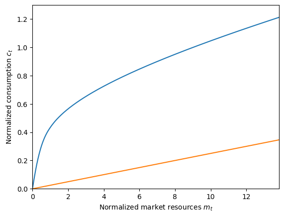
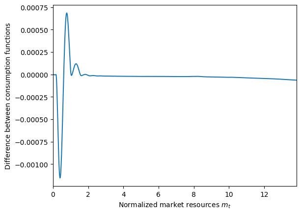

This page was generated from
examples/TractableBufferStockModel/TractableConsumerType.ipynb.
Interactive online version: .
Download notebook.
.
Download notebook.
Interactive online version:
Tractable Buffer Stock Model#
[1]:
# Import needed tools
from time import time # timing utility
import numpy as np # numeric Python
import matplotlib.pyplot as plt
from HARK.ConsumptionSaving.ConsMarkovModel import (
MarkovConsumerType, # An alternative, much longer way to solve the TBS model
)
from HARK.ConsumptionSaving.TractableBufferStockModel import TractableConsumerType
from HARK.distributions import DiscreteDistributionLabeled
from HARK.utilities import plot_funcs # basic plotting tools
do_simulation = True
[2]:
# Define the model primitives
base_primitives = {
"UnempPrb": 0.00625, # Probability of becoming unemployed
"DiscFac": 0.975, # Intertemporal discount factor
"Rfree": 1.01, # Risk-free interest factor on assets
"PermGroFac": 1.0025, # Permanent income growth factor (uncompensated)
"CRRA": 1.0, # Coefficient of relative risk aversion
"AgentCount": 10000, # Number of agents to simulate
"T_sim": 120, # Number of periods to simulate
}
[3]:
# Make and solve a tractable consumer type
ExampleType = TractableConsumerType()
ExampleType.assign_parameters(**base_primitives)
t_start = time()
ExampleType.solve()
t_end = time()
print(
"Solving a tractable consumption-savings model took "
+ str(t_end - t_start)
+ " seconds.",
)
Solving a tractable consumption-savings model took 0.006001949310302734 seconds.
[4]:
# Plot the consumption function and whatnot
m_upper = 1.5 * ExampleType.mTarg
conFunc_PF = lambda m: ExampleType.h * ExampleType.PFMPC + ExampleType.PFMPC * m
# plot_funcs([ExampleType.solution[0].cFunc,ExampleType.mSSfunc,ExampleType.cSSfunc],0,m_upper)
plt.ylim(0.0, 1.3)
plt.xlabel("Normalized market resources $m_t$")
plt.ylabel(r"Normalized consumption $c_t$")
plot_funcs([ExampleType.solution[0].cFunc, ExampleType.solution[0].cFunc_U], 0, m_upper)

[5]:
if do_simulation:
ExampleType.track_vars = ["mNrm"]
ExampleType.make_shock_history()
ExampleType.initialize_sim()
ExampleType.simulate()
[6]:
# Now solve the same model using backward induction rather than the analytic method of TBS.
# The TBS model is equivalent to a Markov model with two states, one of them absorbing (permanent unemployment).
init_consumer_objects = {
"CRRA": base_primitives["CRRA"],
"Rfree": [
np.array(
2 * [base_primitives["Rfree"]],
)
], # Interest factor (same in both states)
"PermGroFac": [
np.array(
2 * [base_primitives["PermGroFac"] / (1.0 - base_primitives["UnempPrb"])],
),
], # Unemployment-compensated permanent growth factor
"BoroCnstArt": None, # Artificial borrowing constraint
"PermShkStd": np.array([[0.0, 0.0]]), # Permanent shock standard deviation
"PermShkCount": 1, # Number of shocks in discrete permanent shock distribution
"TranShkStd": np.array([[0.0, 0.0]]), # Transitory shock standard deviation
"TranShkCount": 1, # Number of shocks in discrete permanent shock distribution
"T_cycle": 1, # Number of periods in cycle
"UnempPrb": np.array(
[[0.0, 0.0]]
), # Unemployment probability (not used, as the unemployment here is *permanent*, not transitory)
"UnempPrbRet": None, # Unemployment probability when retired (irrelevant here)
"T_retire": 0, # Age at retirement (turned off)
"IncUnemp": np.array([[0.0, 0.0]]), # Income when unemployed (irrelevant)
"IncUnempRet": None, # Income when unemployed and retired (irrelevant)
"aXtraMin": 0.001, # Minimum value of assets above minimum in grid
"aXtraMax": ExampleType.mUpperBnd, # Maximum value of assets above minimum in grid
"aXtraCount": 48, # Number of points in assets grid
"aXtraExtra": None, # Additional points to include in assets grid
"aXtraNestFac": 3, # Degree of exponential nesting when constructing assets grid
"LivPrb": [np.array([1.0, 1.0])], # Survival probability
"DiscFac": base_primitives["DiscFac"], # Intertemporal discount factor
"AgentCount": 1, # Number of agents in a simulation (irrelevant)
"tax_rate": 0.0, # Tax rate on labor income (irrelevant)
"vFuncBool": False, # Whether to calculate the value function
"CubicBool": True, # Whether to use cubic splines (False --> linear splines)
"Mrkv_p11": [
1.0 - base_primitives["UnempPrb"]
], # Define the two state, absorbing unemployment Markov array
"Mrkv_p22": [1.0], # Define the two state, absorbing unemployment Markov array
}
MarkovType = MarkovConsumerType(**init_consumer_objects) # Make a basic consumer type
[7]:
employed_income_dist = DiscreteDistributionLabeled(
pmv=np.ones(1),
atoms=np.array([[1.0], [1.0]]),
var_names=["PermShk", "TranShk"],
) # Income distribution when employed
unemployed_income_dist = DiscreteDistributionLabeled(
pmv=np.ones(1),
atoms=np.array([[1.0], [0.0]]),
var_names=["PermShk", "TranShk"],
) # Income distribution when permanently unemployed
[8]:
MarkovType.IncShkDstn = [
[employed_income_dist, unemployed_income_dist],
] # set the income distribution in each state
MarkovType.cycles = 0
[9]:
# Solve the "Markov TBS" model
t_start = time()
MarkovType.solve()
t_end = time()
MarkovType.unpack("cFunc")
[10]:
print(
'Solving the same model "the long way" took ' + str(t_end - t_start) + " seconds.",
)
# plot_funcs([ExampleType.solution[0].cFunc,ExampleType.solution[0].cFunc_U],0,m_upper)
plt.ylim(0.0, 1.3)
plt.xlabel("Normalized market resources $m_t$")
plt.ylabel(r"Normalized consumption $c_t$")
plot_funcs(MarkovType.cFunc[0], 0, m_upper)
diffFunc = lambda m: ExampleType.solution[0].cFunc(m) - MarkovType.cFunc[0][0](m)
plt.xlabel("Normalized market resources $m_t$")
plt.ylabel(r"Difference between consumption functions")
plot_funcs(diffFunc, 0, m_upper)
Solving the same model "the long way" took 1.1812794208526611 seconds.

[ ]:
[ ]: